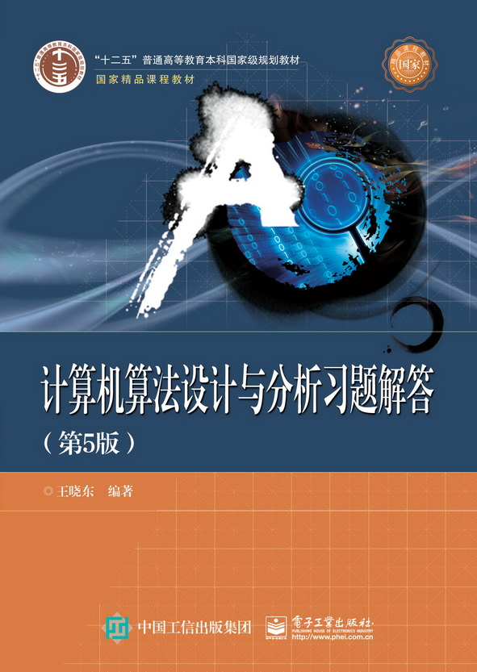
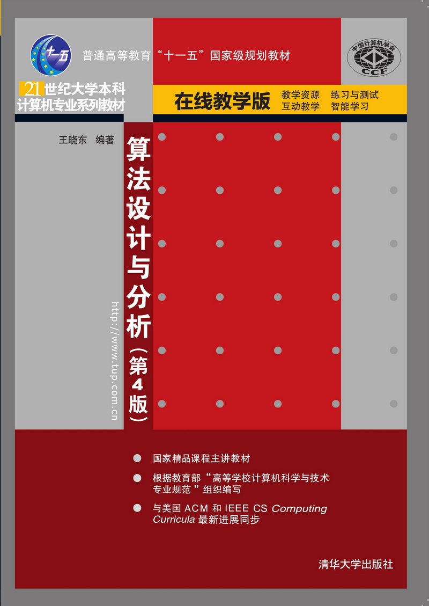
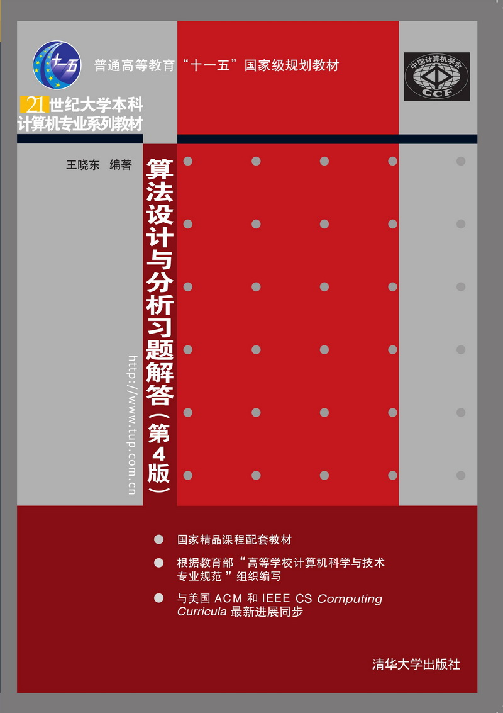
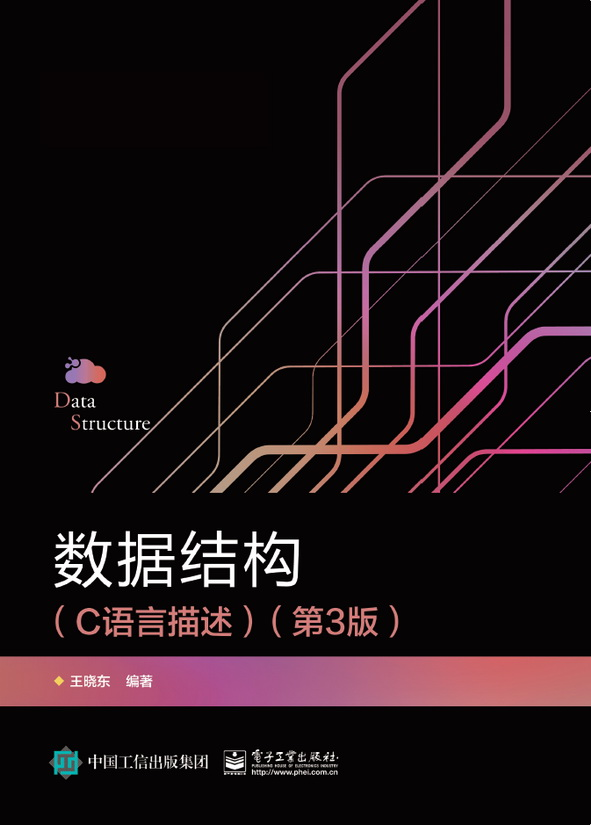
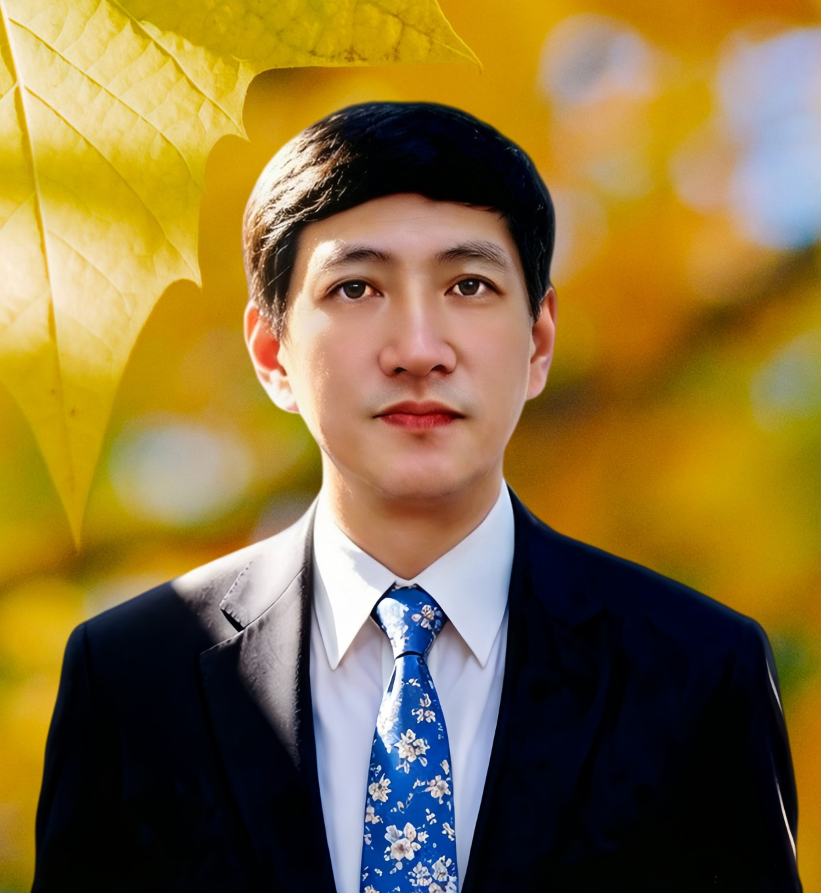

王晓东，山东人，福建理工大学原副校长、教授，福建省计算机学会理事长。1982年2月（77级）毕业于福州大学数学系，1990年赴德国留学，1997年破格晋升教授。
长期从事计算机算法设计与分析、计算复杂性、信息安全、几何计算等方向研究，主持国家自然科学基金、优秀留学回国人员基金、省杰出人才基金等7项课题；发表学术论文50余篇，出版《算法设计与分析》等教材著作11部，4部为国家级十一五和十二五规划教材；获国家科技进步二等奖1项、省科技进步二等奖3项。主持国家级精品课程《算法与数据结构》《算法设计与分析》。




🏆 国家科技进步二等奖、多项福建省科技进步奖，算法理论成果被国内外权威文献引用
💡 主要贡献：分治算法、动态规划、几何计算、并行分布式算法、计算复杂性理论研究
📌 更多论文见于 Information Processing Letters、Theoretical Computer Science、Algorithms 等国际期刊。